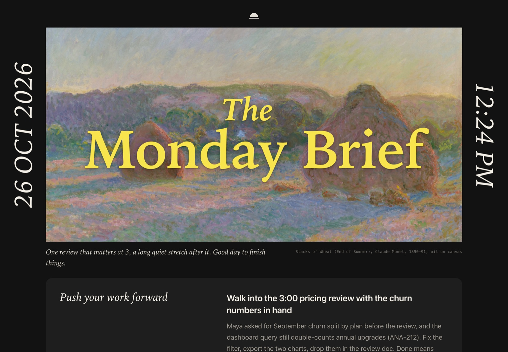
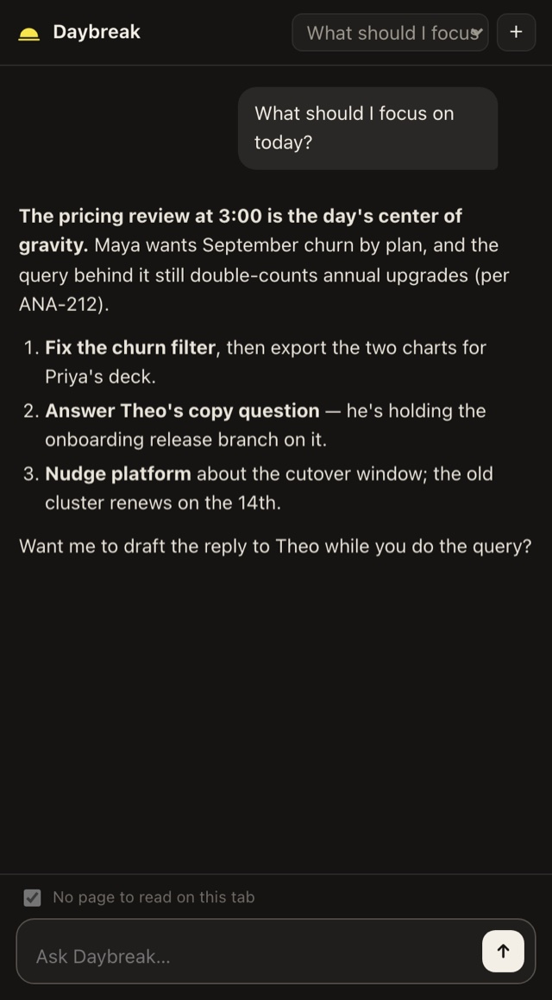

A quiet morning brief for your browser.
Every weekday, Daybreak reads what happened while you were away and leaves one calm page on your new tab. It works in Dia, Chrome, Arc, Edge, Brave and any Chromium browser, on the Claude subscription you already have.

What's on the page
It reads your email, calendar, tickets, docs and Slack, and tells you what matters today, who is waiting on you, and which meeting deserves ten minutes of preparation.
Push your work forward
The one or two moves that would make today count, with the names and ticket numbers already filled in.
Top to-dos
The loops you owe other people, each linked back to where it came from.
New updates
What moved in each thing you're working on since yesterday, tagged and with the people involved.
Your day & looking ahead
Your meetings, the one worth preparing for, and a question about what you'd like to tackle tomorrow.
The rest of the day
Five minutes before a meeting, a small card slides in with Ignore, Prep notes and Join. The prep notes are already written.
The side panel holds an assistant that knows your week. It can explain the page you're on, draft the reply you've been avoiding, or turn a thread into a one-pager or deck.

What Daybreak will never do
- Send, post or change anything on your behalf. Background work is read-only.
- Ping you after hours, or more than three times an hour.
- Ask for an API key. It uses your existing Claude subscription through the Claude Agent SDK.
- Phone home. Your data stays in one folder on your computer.
Getting started
git clone https://github.com/kiraa06/daybreak.git && cd daybreak
python3 -m venv .venv && .venv/bin/pip install -e .
.venv/bin/daybreak installThen load the extension folder that install prints via chrome://extensions → Developer mode → Load unpacked. The README has the details.
Questions people ask
Is Daybreak a Better Days alternative?
Yes. Dia's Better Days plan includes a lovely Morning Brief and meeting prep. Daybreak gives you the same kind of morning in whichever Chromium browser you use, Dia included, on the Claude subscription you already pay for. It's free, open source, and not affiliated with The Browser Company.
Which browsers does it work in?
Any Chromium browser that loads unpacked extensions: Dia, Chrome, Arc, Edge, Brave, Vivaldi, Opera and Chromium.
Does it need a Slack app?
No. By default it reads Slack through the session already signed in to your browser, so it works even where installing apps isn't allowed.
Why a painting?
Because the first thing you see in the morning should be nicer than an inbox. A different public-domain painting each day.